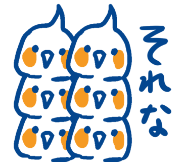
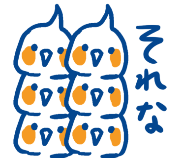

オカメインコ
寿命
平均寿命は約15年。30年生きたという記録もあるようです。
大きさ
胴体はスマホくらい、尾は15㎝くらい。
色
名称がついているのは7～8種類。
性格
人懐っこい・さみしがりや・おとなしい・びびり
ノーマル
ルチノー
シナモン
パール
パイド

ホワイトフェイス
アルビノ
お世話のしかた
ごはん
一日一回、餌と水を取り替えます。
掃除
鳥かごの汚れが目立ってきたら掃除をします。
あそびかた
なでる
頭を下げて自ら頭を押し付けてくることもあります。
背中は嫌がる子が多いので注意。
歌や言葉を教える
歌や何かの音を覚えやすいです。
覚えると自信たっぷりに披露してくれます。
目覚ましアラームになってくれることも。
おもちゃで遊ぶ
かじるおもちゃを与えたり、太鼓のおもちゃを一緒にたたいたり。
いそがしいときは…
肩に乗せる
実際は遊ぶより肩でくつろぐことの方が多かったりします。
仲間だと思ってちょっかいを出しがち。
歩かせる
飛ぶことより歩くことのほうが好きなので、喜んで家の中を散歩します。
気をつけること
たべもの
むやみに人間の食べ物をあげないこと。チョコや玉ねぎなど、小鳥にとっては猛毒のものも多いです。
病院の場所
動物病院といっても小鳥を診てくれる病院は意外に少ないので、病院の場所は把握しておくこと。
気温
最適な気温は25度。もともとはオーストラリアの森に住む個体なので、寒さには弱く、高温多湿にも弱いです。ヒーターで管理すること。
オカメパニック
臆病なので、恐怖を感じたりびっくりするとオカメパニックというものを引き起こし、飛び回ってけがをすることがあります。特に地震や掃除機の音、突然のくしゃみに気を付けること。常に小さい音でラジオを流しておくのがおすすめ。
必要なもの
お迎えするには以下のものを準備しましょう。
費用
初期費用は4万円（生体費用込み）
生活費用は一か月あたり1000円程度（エサ代がほとんど）
オカメインコ自体は2万円前後
もの
中型インコ・オカメインコ用と書かれたもの。
ヒマワリの種が大好き。野菜は小松菜が栄養豊富。
雛はけがをしやすいので虫かご、成鳥は鳥かごで飼育します。
重要な居場所です。鳥かごに設置します。
温度管理に使います。大事です。

退屈をさせないため。インコと仲良くなれるツールでもあります。
環境
ペット可の家
鳴き声はMAXでホイッスルを全力で吹いたとき、歌っているときは口笛並みの音量です。


 
